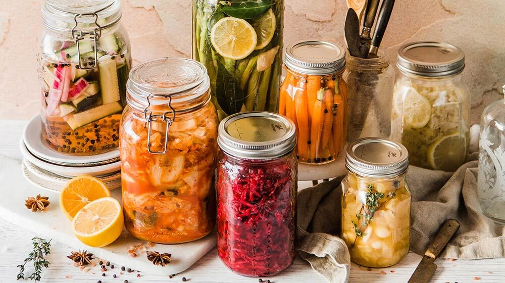
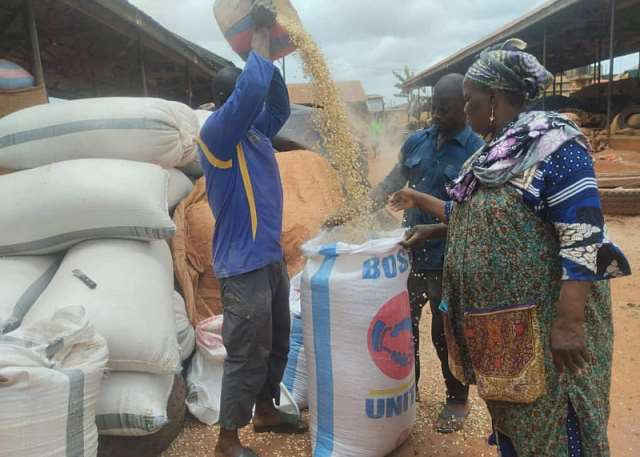
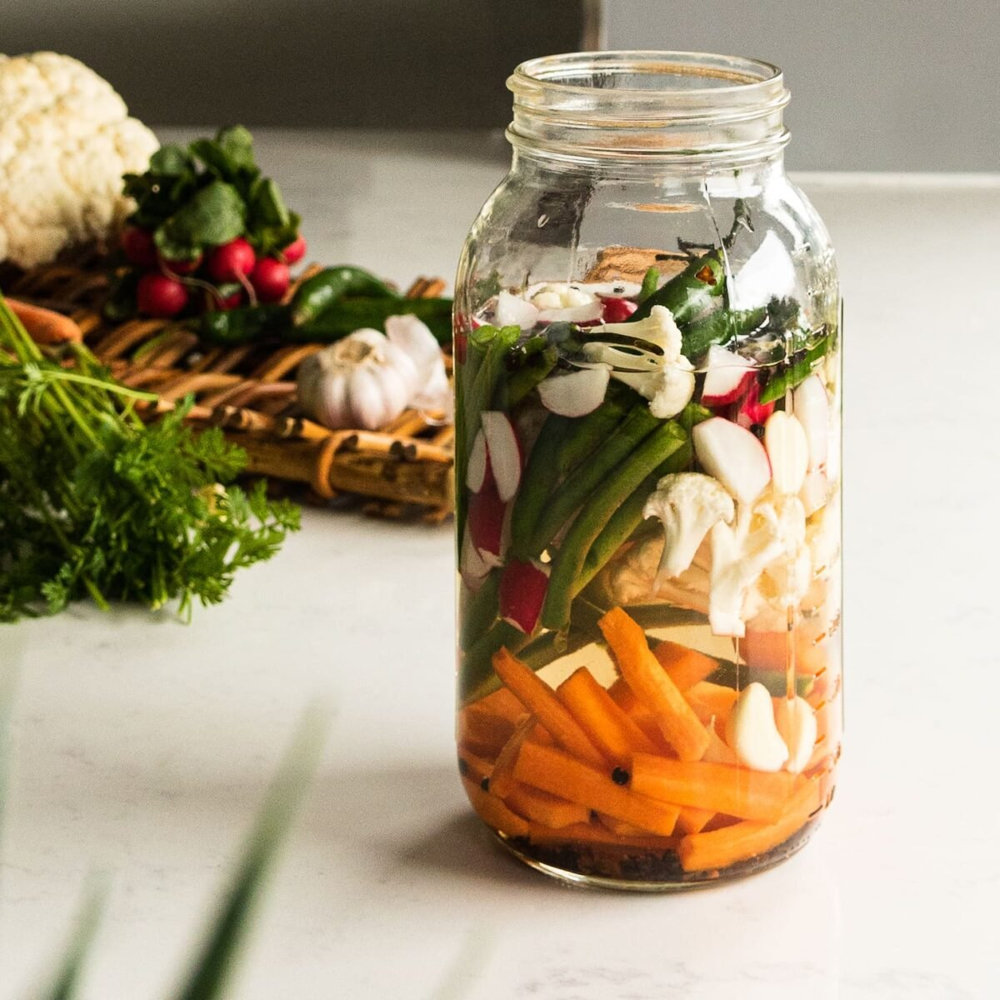
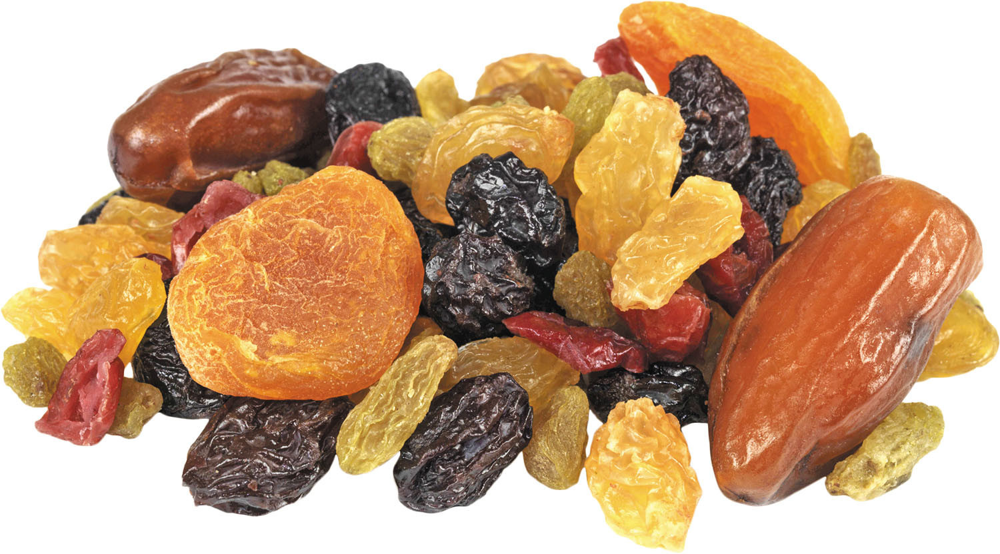

Overview
Purpose
This website promotes sustainable food preservation practices within local communities. It serves as a digital pamphlet for an upcoming educational event, offering clear guidance on microbiological principles, preservation techniques, and community impact.
Audience
Designed for community organizers, educators, students, families, and public health advocates seeking practical, accessible preservation knowledge. The site is optimized for mobile and desktop viewing, with intuitive navigation and modular content.
Branding
Website Logo
Style Guide
Color Palette
| Primary | Secondary | Accent 1 | Accent 2 | Accent 3 | Accent 4 |
|---|---|---|---|---|---|
Typography
Heading Font: DM Serif Display
Paragraph Font: Lora
Normal paragraph example
Preserving food reduces waste, improves nutrition, and builds community resilience. This site will guide users through safe, simple techniques they can apply at home.
Colored paragraph example
Join us in empowering communities through food preservation. Learn, share, and grow together at our upcoming workshop.
Navigation
Site Map
Content
Home Page
Title: Community Food Preservation Initiative Tagline: “Preserve food. Empower communities.” Sections: - Why preservation matters (nutrition, waste reduction) - Community benefits (resilience, skill-sharing) - Call to Action: “Explore Methods” button
Images for the Home page
 Methods Page
Title: Preservation Methods Sections: - Fermentation: Benefits, examples (e.g., sauerkraut), image - Drying: Sun drying, dehydrators, storage tips - Canning: Equipment, safety, shelf life - Tips Section: “Top 5 Safety Guidelines”
Images for the Methods page
 